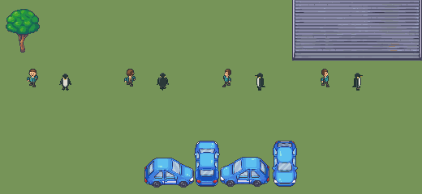

Pending draft. Fixed elevated 40 degree camera, 10 pixels per world unit. Native22px profiles beside approved Explorer (proposal26). Ground walk and underwater flipper swim; decorative water. Media transition is instantaneous.
Review observations / Integrity / Native loop
